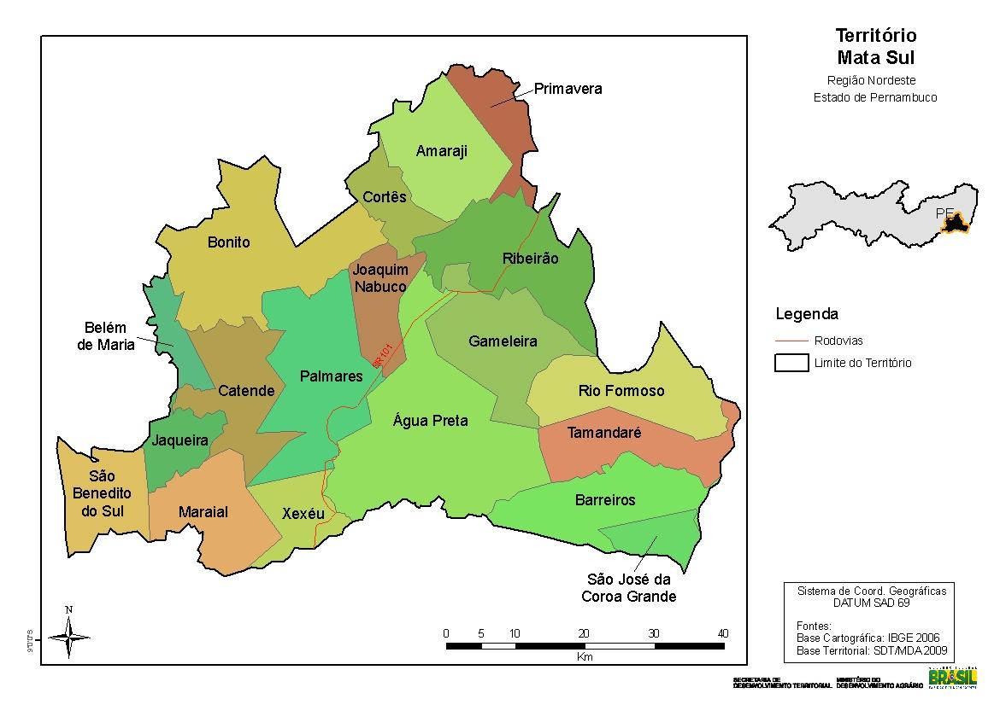

Localiza-se a uma latitude 08º41'00" sul e a uma longitude 35º35'30" oeste, estando a uma altitude de 125 metros. Sua população, conforme estimativas do IBGE de 2021,era de 63 745 habitantes.[2]A sede do município dista 122 km de Recife, a capital do Estado; 105 km de Garanhuns e 123 km de Maceió,a capital do vizinho Estado de Alagoas. Situa-se a 125 metros acima do nível do mar.
Limita-se ao norte com o Município do Bonito, a nordeste e leste com Joaquim Nabuco, ao sul com Xexéu, a sudeste com Água Preta e a oeste com Catende.